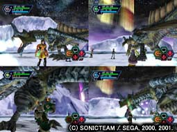
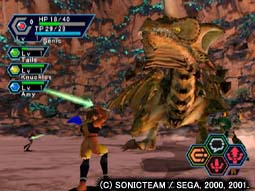
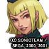
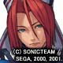
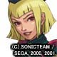
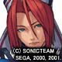
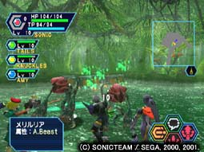
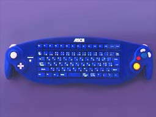

| オフラインで4人同時プレイ可能！！ |
|  |
『PSO』ニンテンドーゲームキューブ版では、ゲームキューブの性能を生かし、オンラインに繋ぐことなく、４分割画面で、４人同時プレイを楽しむことができます。
友達とキャラクターを持ちよってワイワイプレーすれば、オンラインとはまた違った楽しさが味わえることでしょう。 |
|
| もちろんネットワークプレイ可能！！ |
|  |
『PSO』ニンテンドーゲームキューブ版でも、これまでの『PSO』『PSO
Ver.2』の要素はすべてふくまれています。
もちろん、今まで通りネットワークを使ったオンラインプレイで遠く離れた人とでも一緒に冒険することが可能です。 |
|
| 新キャラクター（３体）が追加！！ |
   |
『PSO』ニンテンドーゲームキューブ版では、これまでの９体に加え、各職業に一体ずつの新キャラクターを追加いたします。
※イラストをクリックすると全身イラストとゲーム中のキャラクターがご覧になれます。 |
|
| 冒険できる新ステージが追加！！ |
|  |
『PSO』ニンテンドーゲームキューブ版では、ご要望の多かった”冒険のできる”新ステージを追加いたします。
今回は[東京ゲームショウ2001秋]で公開しました、密林（仮）ステージをご紹介致します。
ンテンドーゲームキューブだからこそできる、更に魅力あふれる新ステージにご期待ください。
※写真をクリックすると更に多くの画面がご覧になれます。 |
|
| 新エネミー、新ボスも追加！！ |
 |
『PSO』ニンテンドーゲームキューブ版では、新ステージだけでなく、新エネミー、新ボスも、更に手強くなって登場します。
今回は密林（仮）ステージに登場する新エネミーと新ボス「ガル・グリフォン」をご紹介致します。
※写真をクリックすると更に多くの画面がご覧になれます。 |
|
| 新開発！キーボードコントローラー（仮）とは！？ |
| 
※上の写真は転載禁止です。ご了承ください。
|
『PSO』ではチャットは重要なコミュニケーション手段。皆様からも「キーボードは発売されないの?」という声を沢山頂きました。
「ただのキーボードではない、コンシューマーのネットワークRPGにふさわしいコントローラーを作ろう！」とした、ソニックチームの回答がここにあります。
わずらわしい持ち替えは必要ありません。
キーボードコントローラーは（株）アスキーより、ソフトと同時発売の予定です！ |
|
| 皆さんの意見を取り入れ、便利な新機能を追加！！ |
ユーザーの皆様から寄せられた声にお応えして、新機能をいくつか追加いたします。
-
安心して交換のできるトレードウィンドウ
-
悪質ユーザーとのコミュニケーションＯＦＦ機能
などを現在予定しております。
また、新マップや新キャラクターを追加したために、ゲーム全体のバランスの見直しも現在行っております。 |
|